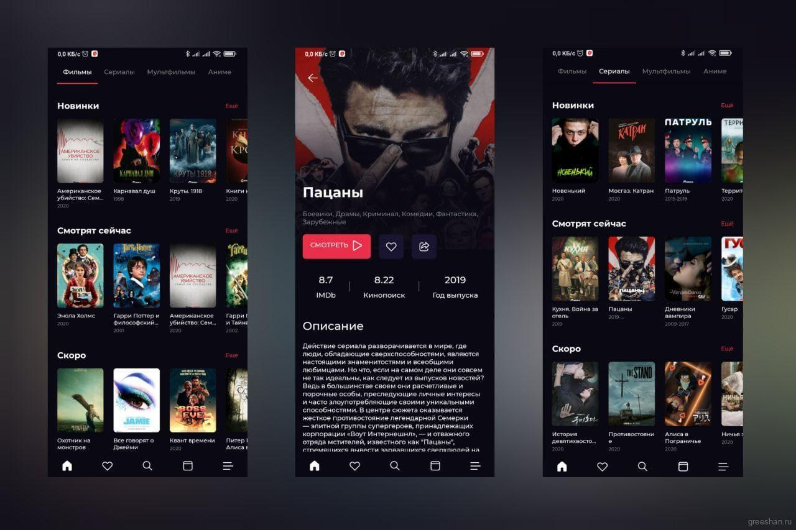

Небольшой пост с нерекламой,но отзывом об одном приложении
Сам не так давно обнаружил это приложение, но оно кардинально облегчило мне жизнь в теме просмотра кино или сериалов
Приложение называется – Movily, и к нему вы можете получить доступ и с ноутбука, и с телефона.
Movily – видеосервис для просмотра фильмов, сериалов, мультиков и аниме, в различных озвучках, с изменением скорости воспроизведения, и возможностью найти самые новые, желаемые вам кино,сериалы и др.
Зачастую новинки появляются там уже через 2 недели, если не раньшее
Для того чтобы зайти с ноутбука нужно все во лишь зайти на сайт и нажать перейти к просмотру
А для просмотра с телефона мы должны скачать приложение из их Telegram-канала
Да бывают сбои, но очень редко, а само приложение нердко обновляется и тем самым улучшается. Я советую к использованию